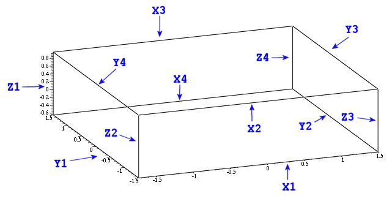
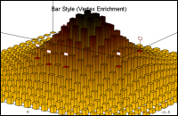

Calculations are performed as accurate
as
DBL_EPSILON (see your
float.h for the precise value). This is mainly due to the autoscaler.
See e.g.
here
for a topic related discussion.
Simple
Plot
//-----------------------------------------------------------------
// simpleplot.cpp
//
// A simple example which shows how to use GridPlot
//-----------------------------------------------------------------
#include <math.h>
#include <qapplication.h>
#include <qwt3d_gridplot.h>
#include <qwt3d_function.h>
using namespace Qwt3D;
class Rosenbrock : public Function
{
public:
Rosenbrock(GridPlot* pw)
:Function(pw)
{
}
double operator()(double x, double y)
{
return log((1-x)*(1-x) + 100 * (y - x*x)*(y - x*x)) / 8;
}
};
class Plot : public GridPlot
{
public:
Plot();
};
Plot::Plot()
{
setTitle("A Simple GridPlot Demonstration");
Rosenbrock rosenbrock(this);
rosenbrock.setMesh(41,31);
rosenbrock.setDomain(-1.73,1.5,-1.5,1.5);
rosenbrock.setMinZ(-10);
rosenbrock.create();
setRotation(30,0,15);
setScale(1,1,1);
setShift(0.15,0,0);
setZoom(0.9);
for (unsigned i=0; i!=coordinates()->axes.size(); ++i)
{
coordinates()->axes[i].setMajors(7);
coordinates()->axes[i].setMinors(4);
}
coordinates()->axes[X1].setLabelString("x-axis");
coordinates()->axes[Y1].setLabelString("y-axis");
coordinates()->axes[Z1].setLabelString(QChar (0x38f)); // Omega - see http://www.unicode.org/charts/
setCoordinateStyle(BOX);
updateData();
updateGL();
}
int main(int argc, char **argv)
{
QApplication a(argc, argv);
Plot plot;
#if QT_VERSION < 0x040000
a.setMainWidget(&plot);
#endif
plot.resize(800,600);
plot.show();
return a.exec();
}
|
The code above shows the almost most simple application of a GridPlot.
Data are provided by a mathematical function object
(Rosenbrock). You can derive from this kind of classes by
including
qwt3d_function.h. A base for the other player
-
the widget itself - resides inside
qwt3d_gridplot.h.
The derived class makes only small adaptations to the standard
behaviour,
mainly providing scales and label for the axes and a boxed coordinate
system . The axes themselves are autoscaled.
Mouse
and Keyboard Handling
Try Ctrl, Shift, Alt in combination with your wheel and left
mouse button to get a clue (or use instead your cursor keys).
The base class Plot3D implements the standard mouse and keyboard
behaviour. You can
perform shifts, turns, scales and zooms with your left mouse button and
combinations of
Ctrl, Shift
and
Alt. Some
actions
have equivalents delegated to your wheel. You can also turn on or off
mouse handling entirely by using Plot3D::enableMouse () and
Plot3D::disableMouse (). The default behaviour can be changed with
Plot3D::assignMouse(). Keyboard handling has been implemented in a
similar way.
Additionally, you can determine the speed of the performed
actions when using the keyboard.
Coordinate
Systems and Axes

Axes are subdivided by major and minor tics. You have full control over
tic length and orientation and also the line width of tics and the axis
body. Furthermore, the axes provide captions and numberings. The
colors,
fonts etc. are customizable for all of these parts. Additionally, all
axes
with linear scaling are autoscalable, giving them major tics at
positions which are
multiples of 1,2,5 * 10^n relative to the underlying interval. 12 axes
together form the coordinate system. It can be visualized as frame or
box
and has
the ability to autoswitch axis decoration and visibility of axes
themselves depending on the position in the 3D-space. Most axis
properties can be changed for the whole coordinate system at once or
separately for single axes. An axis is
also part of the color legend object.
Axes are highly customizable regarding label content and tic
distribution. Linear and logarithmic scales are supported by default.
Other variants, like different numbering schemes (date/time, letters
etc.) and user-defined scales are possible.
See the
'axes' project for example implementations.
Plotting
Styles
// todo
Normal
Vectors
// todo
Colors
The
Color
class operates comparable to
Function in defining
a callback operator(x,y,z) - able to assign to every single data point
a RGBA value. In many cases it is sufficient to do this in an
exclusively
z-coordinate dependent manner.To satisfy this demand, the
StandardColor
class has been provided. The class has a vector<RGBA> member and
the operator() distributes the entries equidistant between the extreme
z values of the data. The Plot3D constructor enforces as standard
behaviour a StandardColor object with 100 RGBA entries.
The mesh2 data color dialog gives a good example of changing a standard
color. The widget is a specialized Qt file
dialog for reading palette files (*) . The example files include not
more than 256
different colors (since originally designed for 256 color graphics),
but the color vector itself (and also the file reading routine) is not
limited to this number. To give a plot a new color use
Plot3D::setDataColor
. Also, simple RGBA Color attributes are available for background,
axes,
meshes, labels, title etc..
*shameless stolen from the
fractint
homepage
Lighting
Some Plot3D class member encapsulate (partially) OpenGL's
lighting features. This means material and light source properties and
light source positions. You can set up to 8 different lights (OpenGL
guaranteed minimum). Beware, that some calculations become very slow in
this case. Lighting is considered
experimental at this
moment, and works not yet in a completely precise way. This will be
fixed in the future.
Fonts
etc.
All Fonts available for Qt are also provided for screen representation
(including Unicode) and pixmap output. A special question concerns
output in
vector formats. At the moment I
have no plans in supporting FreeType or similar solutions. But you can
still use the gl2ps provided mixed TeX-EPS/PDF variant, producing
pretty satisfying results.
Widget Types
Overview:
// todo
Surfaces:
// todo
Graphs & General
Cell Complexes:
// todo
Enrichments
Generally spoken, an Enrichment provides additional visual objects
depending on data properties. Furthermore, the base class has been well
embedded in the plots framework to draw these objects in a reasonable
efficient manner. Enrichments come in six flavors: user-, vertex-,
edge-,
face-, voxel-, graph- and widget-driven (the term 'graph' refers
to the
data
object as a whole). Widget Enrichments are somewhat special, because
they describe entities outside the data object. In future
versions they will also gather things like title and legends. The
variants 3)-7) are
future work, but
the yet implemented user- and vertex-based Enrichments are still
remarkable
powerful:

The primary impulse came from the wish
to add some small objects (esp. marker etc.) at dedicated positions to
the plot. The result is surprisingly more far-reaching. The screenshot
shows an
entire new plotting
style utilizing Vertex Enrichments. The small red-white
marker objects are part of the generating Enrichment
object as well as the bars themselves. Beginning with version 0.2.3
QwtPlot3D supports user defined plotting styles. But not enough,
Plot3D provides a container allowing the injection of arbitrary
Enrichments also in other contexts. See the class documentation for
closer explanation. The
example/enrichment directory
contains the generating application for the screenshot seen above.
Text, Legends
// todo
Mesh Types
// todo
Input/Output
File I/O in QwtPlot3D works in one of the following ways:
a)
Define a global
function:
bool MyHandler(Plot3D* plot,
QString const& fname)
{
GridPlot* tmpplot = (GridPlot*)plot;
// ... do your in- or output here
return true;
}
b)
... or an enhanced
version - a Functor:
class MyHandler :
public IO::Functor
{
public:
bool some_modifier;
void adaptMyBehaviour();
// The next both must be implemented:
Functor* clone() const
{
// The framework assumes the
destruction,
// so provide a heap based object
here
return new MyHandler(you_name_it);
}
bool operator()(Plot3D* plot, QString const&
fname)
{
// Do highly complex I/O-things here
}
};
In any case the new function/functor has to be registered by one of the
following static functions:
bool IO::defineInputHandler(
QString
const& format, Functor const& func)
bool IO::defineInputHandler( QString const& format, Function func)
The same procedure applies to the
output variants. If you
wish to modify the
behaviour later, you can either replace the actual handler with a
second
call to define...Handler() conveying a fresh function/functor or - in
the case of a functor -
manipulate the yet installed object:
MyHandler* own_format_handler =
(MyHandler*)IO::outputHandler("OWN");
if (own_format_handler)
own_format_handler->adaptMyBehaviour();
// ...
Pre-defined output
handler for all of the QImageIO pixmap formats are available.
Data Input
QwtPlot3D supports one general and some special forms of native data
input:
Generic:
A general approach has been provided in form of the 3 SurfacePlot
member:
| bool |
loadFromData(double
**data, unsigned int columns, unsigned int rows, double minx,
double maxx, double miny, double maxy) |
| bool |
loadFromData(Qwt3D::Triple
**data, unsigned int columns, unsigned int rows, bool uperiodic=false,
bool vperiodic=false) |
| bool |
loadFromData(Qwt3D::TripleVector
const &data, Qwt3D::CellVector
const &poly) |
The 3 functions in this order have ascending generality:
- The first one deals with data on top of
plane grids: z=f(x,y) ;
- The 2nd form maps also deformed rectangular grids x=f(u,v),
y=g(u,v), z=h(u,v) u and v can be periodic - both or
one of them.
- The last variant eventually provides
support for more free formed meshs, divided in a node- (the TripleVector
argument) and a polygon- (the CellVector) part. This kind of
data is common for FEM and CAD applications but not limited to them. It
is the 'swiss knife' because it is of course able to represent all the
other variants. The question here is performance (still not too bad).
Mathematical
Functions & Parametric Surfaces:
Setup a function object. To do so, inherit from the Function class and
write your own version of
Function::operator()(double
x, double y). Set
the domain and perhaps limitations for the range and call
Function::create(). Thats
all.See also Function and the implementation
of concrete functions in 'examples'. Parametric surfaces are
generalizations of functions. In a similar way,
ParametricSurface::operator()(double
u,
double v) has to be replaced. (u,v)-domains may have
rotational
symmetry. The drawing routines of GridPlot are aware of this
if you provide the necessary information with
ParametricSurface::setPeriodic().
Grid data
files:
jk:11051895-17021986
MESH
327 466
557726 567506
5.10821e+006 5.12216e+006
682 682 682 682 912 924 928 928 932 ...
... element[327*466-1]
Coding example:
Reading of the aforementioned file type, utilizing the first of the
above mentioned functions.
See NativeReader for additional information. Write your own reader
classes in this spirit. It should always be enough to provide
appropriate data for loadFromData.
bool NativeReader::operator()(Plot3D* plot, QString const& fname, QString const& format)
{
FILE* file;
unsigned int xmesh, ymesh;
double minx, maxx, miny, maxy;
if ( !collectInfo(file, fname, xmesh, ymesh, minx, maxx, miny, maxy) )
return false;
/* allocate some space for the mesh */
double** data = allocateData(xmesh, ymesh);
for (unsigned int j = 0; j < ymesh; j++)
{
for (unsigned int i = 0; i < xmesh; i++)
{
if (fscanf(file, "%lf", &data[i][j]) != 1)
{
fprintf(stderr, "NativeReader::read: error in data file \"%s\"\n", (const char*)fname.local8Bit());
return false;
}
if (data[i][j] > maxz_)
data[i][j] = maxz_;
else if (data[i][j] < minz_)
data[i][j] = minz_;
}
}
/* close the file */
fclose(file);
((GridPlot*)plot)->loadFromData(data, xmesh, ymesh, minx, maxx, miny, maxy);
deleteData(data,xmesh);
return true;
}
|
Data Output
// todo
Technicalities/Helper Structures etc.
Smart Pointer:
Qwt3D::ValuePtr,
a ValuePtr class from Sutter's "More Exceptional C++" allows assignment
and copy construction, even for different but related classes.
Semantics:
ValuePtr<T> t(new T); // OK
ValuePtr<Base> b;
ValuePtr<Derived> d;
b = d; // OK
ValuePtr<Base> bb;
bb = b; // No slicing, b is clonedValuePtr<Base> bbb(b); // Same
Examples inside the library include ValuePtr<Color> rtc..
Examples
All the examples can be found in the
examples subdirectory,
executables are gathered in the
examples/bin directory.
simpleplot
|
The almost most simple plot
possible
|
autoswitch
|
Demonstrates the autoswitching
of axes, and the parallel use of 2 plot widgets in a splitter windows.
|
axes
|
Manipulation of axes
parts, like tics, labeling (including the application of user-defined
numbering); Positioning for labels; Nonlinear scales
|
enrichments
|
The running version from the Enrichment discussion.
|
mesh2
|
Main example. It includes (most
of) the other features not found in specialized examples. There are
still things, hidden in the API. There is a thesis.tex file under the
sources of mesh2. It can be used to produce complete output (esp.
vectorized numbering etc.) in connection with the libraries PDF and PS
output facilities.
|
freemesh
|
A
few variants for creating MeshPlots:
- handcrafted (freeformed tetra/polyhedron)
- FEM data (reading from files in
data/*)
|
graph
|
|
{kind=link}